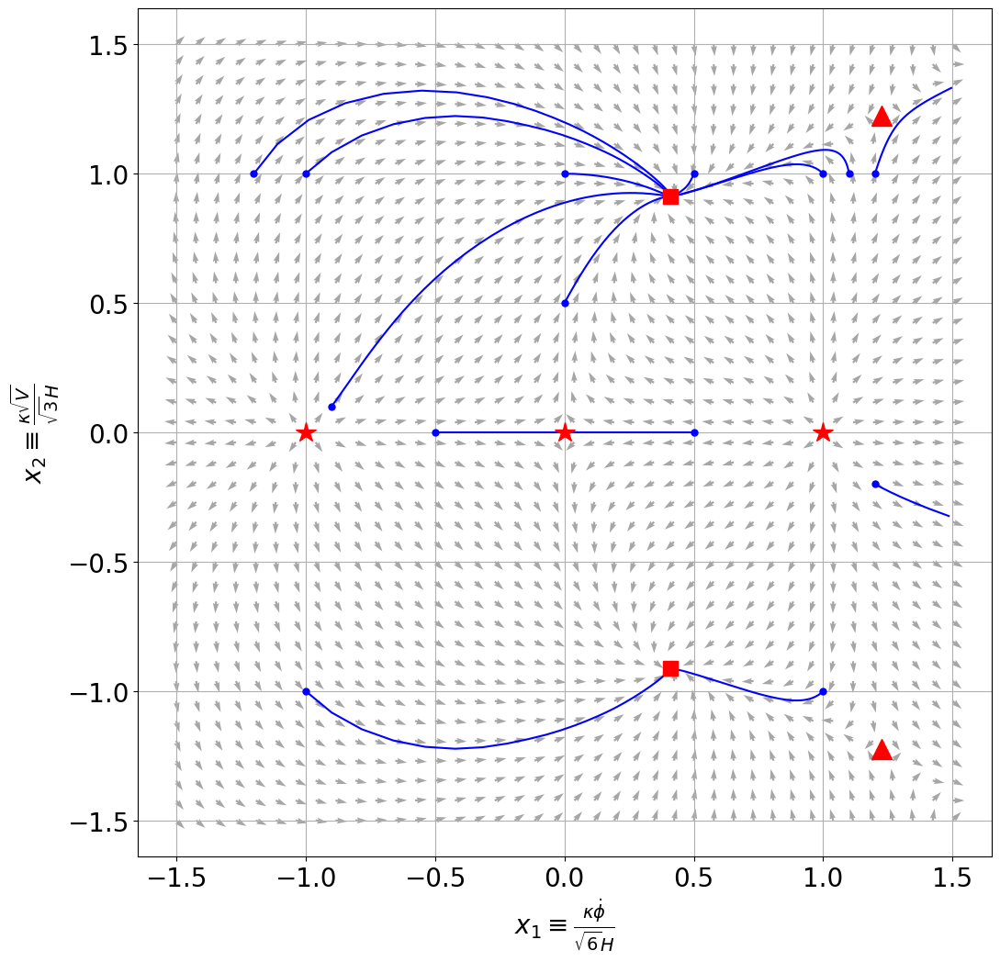
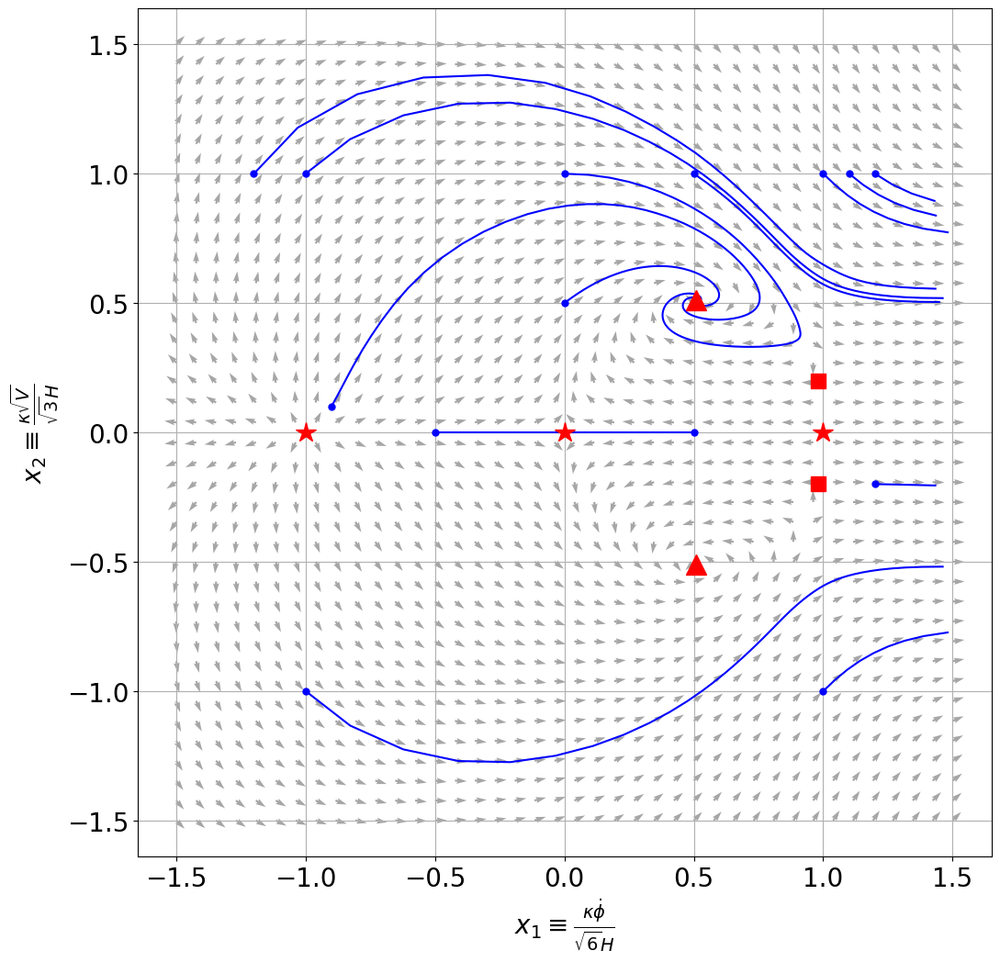

Fernando Garcia Cortez
Scalar Field Dynamics, Dynamical Systems, and Quintessence
Out of all the various models of dark energy, quintessence can be thought of as the simplest alternative to the cosmological constant.
In this entry, I will explore the basic ideas behind quintessence, the role of scalar fields in cosmology, and how dynamical systems provide powerful tools for analyzing dark energy models.
Quintessence is, in a few words, a scalar field that interacts only gravitationally with the rest of the universe:
\[\mathcal{L}_{\text{Quintessence} }-\frac{1}{2}g^{\mu \nu }\partial _{\mu }\phi \partial _{\nu }\phi -V(\phi ) \]Popular choices for the potential $V(\phi ) $ come in the form of freezing models (such as $V(\phi )=M^{4+n}\phi ^{-n}$, for $n>0$) and thawing models (such as $V(\phi )=V_0 +M^{4-n}\phi ^{n} $, for $n>0 $). In this post, I will focus primarily on the case of an exponential potential.
Scalar Field Dynamics
As stated before, quintessence is modeled (by definition) using a scalar field, from now on $\phi $. Its lagrangian will not contain interactions with other components of the universe, so it is sufficient to speak of $V(\phi ) $.
In an FLRW, the energy-momentum tensor
\[T_{\mu \nu }=-\frac{2}{\sqrt{-g}}\frac{\delta (\sqrt{-g}\mathcal{L}_{\phi })}{\delta g^{\mu \nu }} \]reduces to
\begin{align*} \rho _{\phi } &= \frac{1}{2}\dot{\phi }^2 +V(\phi ), \\ p_{\phi } &= \frac{1}{2}\dot{\phi }^2 -V(\phi ). \end{align*}Where $\rho _{\phi } $ and $p_{\phi } $ are the energy density and pressure of $\phi $, respectively. As such, one can write the equation of state $w\equiv \frac{p}{\rho } $ as:
\[w_{\phi }=\frac{\dot{\phi }^2 -2V(\phi )}{\dot{\phi }^2 +2V(\phi )} .\]To properly study quintessence, we must acknowledge that it is not the only species in the universe. Nonetheless, we can keep it simple and introduce just another species in the form of a perfect fluid with pressure $p_F $ and energy density $\rho _F $. The Friedmann equations tell us, firstly, that
\begin{align*} H^2 &= \frac{8\pi G}{3}\rho \\ &= \frac{\kappa ^2 }{3}(\rho _{\phi }+\rho _{F})\\ &= \frac{\kappa ^2 }{3} \left( \frac{1}{2}\dot{\phi }^2 +V(\phi )+\rho _F \right). \end{align*}And secondly, that
\begin{align*} \dot{H} &= \frac{1}{2} \left( -8\pi Gp-3H^2 \right) \\ &= \frac{1}{2} \left( -\kappa ^2 (p_{\phi }+p_F)-\kappa ^2 \left( \frac{1}{2}\dot{\phi }^2 +V(\phi )+\rho _F \right) \right) \\ &= \frac{1}{2} \left( -\kappa ^2 (\frac{1}{2}\dot{\phi }^2 -V(\phi )+p_F)-\kappa ^2 \left( \frac{1}{2}\dot{\phi }^2 +V(\phi )+\rho _F \right) \right) \\ &= -\frac{\kappa ^2 }{2} \left( \dot{\phi }^2 +\rho _F+p_F \right) \end{align*}where we assumed that the universe is flat and introduced the constant
\[\kappa ^2 =8\pi G .\]The equation of motion (here a Klein-Gordon equation) follows from the variation of the action:
\[\ddot{\phi }+3H\dot{\phi }+V_{,\phi }=0 \]And a last equation describing the evolution of $\phi $ comes from the continuity equation:
\[\dot{\rho }_\phi +3H(\rho _{\phi }+p_{\phi })=0. \]It is often useful in cosmology to work with dimensionless variables. In this context, the following dimensionless variables are often used:
\begin{align*} x_1 &= \frac{\kappa \dot{\phi }}{\sqrt{6}H} \\ x_2 &= \frac{\kappa \sqrt{V}}{\sqrt{3}H} \end{align*}Observing that $x_1 $ is a proxy for kinetic energy, while $x_2 $ is a proxy for potential energy. Further, observe that the energy fraction of $\phi $ in the universe takes the form:
\[\Omega _{\Phi }\equiv \frac{\kappa ^2 \rho _{\phi }}{3H^2 }=x_1 ^2 +x_2 ^2 .\]As such, if there is no other species besides this and the arbitrary fluid $F $, it is straightforward to conclude that (given that $\Omega _F+\Omega _{\phi }=1 $)
\[\Omega _{F}=1-x^2 _1 -x_2 ^2 .\]The introduction of the dimensionless variables $x_1 ,x_2 $ allows us to rewrite the equations that govern the evolution of quintessence and the universe in a more useful way. Starting with the second Friedmann equation, we observa that
\begin{align*} \frac{\dot{H}}{H^2 } &= -\frac{\kappa ^2 }{2H^2 }(\dot{\phi }^2 +\rho _F+p_F) \\ &= -\frac{\kappa ^2 }{2} \left( \frac{\dot{\phi }^2 }{H^2 }+\frac{\rho _F}{H^2 }+\frac{w_F\rho _F}{H^2 } \right) \\ &= -\frac{\kappa ^2 }{2} \left( \frac{6x_1^2 }{\kappa ^2 }+\frac{\rho _F}{H^2 }(1+w_F) \right) \\ &= -\frac{\kappa ^2 }{2} \left( \frac{6x_1^2 }{\kappa ^2 }+\frac{3}{\kappa ^2 }(1-x_1 ^2 -x_2 ^2 )(1+w_F) \right)\\ &= -3x_1 ^2 -\frac{3}{2}(1+w_F)(1-x_1 ^2 -x_2 ^2 ) \end{align*}Where the equation of state, $w\equiv p/\rho $ for the fluid ($w_F $), was used. We now introduce the variable $N=\ln a $. Observe that
\begin{align*} \frac{dx_1 }{dN} &= \frac{\kappa }{\sqrt{6}} \frac{d}{dN} \frac{\dot{\phi }a}{\dot{a}} \\ &= \frac{\kappa }{\sqrt{6}} \frac{da}{d\ln a}\frac{d}{da} \frac{\dot{\phi }a}{\dot{a}}\\ &= \frac{\kappa }{\sqrt{6}} a\frac{d}{da} \frac{\dot{\phi }a}{\dot{a}} \\ &= \frac{\kappa }{\sqrt{6}} a\frac{dt}{da}\frac{d}{dt} \frac{\dot{\phi }a}{\dot{a}} \\ &= \frac{\kappa }{\sqrt{6}} a\frac{1}{\dot{a}}\frac{d}{dt} \frac{\dot{\phi }a}{\dot{a}} \\ &= \frac{\kappa }{\sqrt{6}} a\frac{1}{\dot{a}}\frac{(\ddot{\phi }a+\dot{\phi }\dot{a})\dot{a}-\dot{\phi }a\ddot{a}}{\dot{a}^2 }\\ &= \frac{\kappa}{\sqrt{6}}\frac{\ddot{\phi }a^2 +\dot{\phi }\dot{a}a-\dot{\phi }a^2 \ddot{a}\frac{1}{\dot{a}}}{\dot{a}^2 }\\ &= \frac{\kappa}{\sqrt{6}}\frac{\ddot{\phi }+\dot{\phi }\frac{\dot{a}}{a}-\dot{\phi }\frac{\ddot{a}}{\dot{a}}}{(\dot{a}/a)^2 }\\ &= \frac{\kappa}{\sqrt{6}}\frac{\ddot{\phi }+\dot{\phi }H-\dot{\phi }\frac{1}{\dot{a}}(a\dot{H}+aH^2 )}{H^2 } \tag{$\ddot{a}=a\dot{H}+aH^2 $}\\ &= \frac{\kappa}{\sqrt{6}}\frac{\ddot{\phi }+\dot{\phi }H-\dot{\phi }\frac{1}{H}(\dot{H}+H^2 )}{H^2 } \tag{$\ddot{a}=a\dot{H}+aH^2 $}\\ &= \frac{\kappa}{\sqrt{6}}\frac{-2H\dot{\phi }-V_{,\phi }-\dot{\phi }\frac{1}{H}\dot{H}-\dot{\phi }H }{H^2 }\tag{Using Klein-Gordon}\\ &= -\frac{\kappa}{\sqrt{6}}2\frac{\dot{\phi }}{H}-\frac{\kappa}{\sqrt{6}}\frac{V_{,\phi }}{H^2 }-\frac{\kappa}{\sqrt{6}}\dot{\phi }\frac{\dot{H}}{H^2 }-\frac{\kappa}{H\sqrt{6}}\dot{\phi }\\ &= -\frac{\kappa}{\sqrt{6}}2\frac{1}{H}\frac{\sqrt{6}H}{\kappa }x_1 -\frac{\kappa}{\sqrt{6}}\frac{V_{,\phi }}{H^2 }-\frac{\kappa}{\sqrt{6}}\frac{\sqrt{6}}{\kappa }x_1 \frac{\dot{H}}{H^2 }-\frac{\kappa}{\sqrt{6}}\frac{\sqrt{6}}{\kappa }x_1 \\ &= -2x_1 -\frac{\kappa }{\sqrt{6}}\frac{V_{,\phi }}{H^2 }-x_1 \frac{\dot{H}}{H^2 }-x_1 \\ &= -3x_1 -\frac{\kappa }{\sqrt{6}}V_{,\phi }\frac{3x_2 ^2 }{\kappa ^2 V}-x_1 \frac{\dot{H}}{H^2 } \\ &= -3x_1 -\frac{\sqrt{6}}{2}\frac{V_{,\phi }}{\kappa V}x_2 ^2 -x_1 \frac{\dot{H}}{H^2 } \\ &= -3x_1 +\frac{\sqrt{6}}{2}\lambda x_2 ^2 -x_1 \frac{\dot{H}}{H^2 } \\ &= -3x_1 +\frac{\sqrt{6}}{2}\lambda x_2 ^2 -x_1 \left( -3x_1 ^2 -\frac{3}{2}(1+w_F)(1-x_1 ^2 -x_2 ^2 ) \right) \\ &= -3x_1 +\frac{\sqrt{6}}{2}\lambda x_2 ^2 +x_1 \left( +3x_1 ^2 +\frac{3}{2}(1+w_F)(1-x_1 ^2 -x_2 ^2 ) \right) \\ &= -3x_1 +\frac{\sqrt{6}}{2}\lambda x_2 ^2 +x_1 \frac{3}{2} \left[ (1-w_F)x_1 ^2 +(1+w_F)(1-x_2 ^2 ) \right] \\ \end{align*}Where we introduced
\[\lambda = -\frac{V_{,\phi }}{\kappa V}. \]Similarly with $x_2 $:
\begin{align*} \frac{dx_2 }{dN} &= \frac{\kappa }{\sqrt{3}}\frac{d}{dN}\frac{\sqrt{V}}{H} \\ &= \frac{\kappa }{\sqrt{3}}\frac{d}{d\ln a}\frac{\sqrt{V}}{H}\\ &= \frac{\kappa }{\sqrt{3}}\frac{da}{d\ln a}\frac{d}{da}\frac{\sqrt{V}}{H}\\ &= \frac{\kappa }{\sqrt{3}}a\frac{d}{da}\frac{\sqrt{V}}{H}\\ &= \frac{\kappa }{\sqrt{3}}a\frac{dt}{da}\frac{d}{dt}\frac{\sqrt{V}}{H}\\ &= \frac{\kappa }{\sqrt{3}}a\frac{1}{\dot{a}}\frac{d}{dt}\frac{\sqrt{V}}{H}\\ &= \frac{\kappa }{\sqrt{3}}a\frac{1}{\dot{a}}\frac{\frac{1}{2\sqrt{V}}V_{,\phi }\dot{\phi }H-\dot{H}\sqrt{V}}{H^2 }\\ &= \frac{\kappa }{\sqrt{3}}a\frac{1}{\dot{a}}\frac{\sqrt{V} \left( \frac{1}{2V}V_{,\phi }\dot{\phi }H-\dot{H} \right) }{H^2 }\\ &= \frac{\kappa }{\sqrt{3}}a\frac{1}{\dot{a}}\frac{\frac{\sqrt{3}Hx_2 }{\kappa } \left( \frac{1}{2V}V_{,\phi }\dot{\phi }H-\dot{H} \right) }{H^2 }\\ &= \frac{\kappa }{\sqrt{3}}a\frac{1}{\dot{a}}\frac{ \left( -\lambda \frac{\sqrt{3}}{2}H^2 x_2 \dot{\phi }-\frac{\sqrt{3}}{\kappa }\dot{H}Hx_2 \right) }{H^2 }\\ &= -\frac{\kappa }{2}\frac{a}{\dot{a}}\lambda x_2 \dot{\phi }-\frac{a}{\dot{a}}\dot{H}H\frac{1}{H^2 }x_2 \\ &= -\frac{1}{2}\lambda x_2 \sqrt{6}\frac{\kappa \dot{\phi }}{\sqrt{6}H}-\frac{1}{H}H\frac{\dot{H}}{H^2 }x_2 \\ &= -\frac{\sqrt{6}}{2}\lambda x_1x_2 - x_2 \frac{\dot{H}}{H^2 }\\ &= -\frac{\sqrt{6}}{2}\lambda x_1x_2 + \frac{3}{2}x_2 \left[ (1-w_F)x_1 ^2 +(1+w_F)(1-x_2 ^2 ) \right] \end{align*}Dynamical systems approach to the exponential potential
We observe that $\lambda $ contains information about the potential $V(\phi ) $. In particular, if $\lambda $ is constant, it follows that $V $ takes an exponential form:
\[V(\phi )=V_0 e^{-\kappa \lambda \phi } \tag{For constant $\lambda $}\]Because $\lambda $ is constant, one can use computer algebra systems to solve for the critical points $x^{(c)}=(x_1 ^{(c)},x_2 ^{(c)}) $, satisfying
\begin{align*} \frac{dx_1 }{dN}\Big|_{x=x^{(c)}} &= 0 \\ \frac{dx_2 }{dN}\Big|_{x=x^{(c)}} &= 0 \end{align*}These points follow:
\begin{align*} x_a &= (0,0) \\ x_b &= (1,0) \\ x_c &= (-1,0) \\ x_d &= \left( \frac{\lambda }{\sqrt{6}},\sqrt{\frac{1-\lambda ^2 }{6}} \right) \\ x_e &= \left( \frac{\lambda }{\sqrt{6}},-\sqrt{\frac{1-\lambda ^2 }{6}} \right) \\ x_f &= \left( \sqrt{\frac{3}{2}}\frac{(1+w_F)}{\lambda },\sqrt{3\frac{1-w_F^2 }{2\lambda ^2 }} \right) \\ x_g &= \left( \sqrt{\frac{3}{2}}\frac{(1+w_F)}{\lambda },-\sqrt{3\frac{1-w_F^2 }{2\lambda ^2 }} \right) \end{align*} $\lambda =1$, $w_F=0$ (matter-like).
Points a, b, c represented with stars.
Points d, e with squares.
Points f, g with triangles.
With the aid of some code, we can plot a phase portrait and some trajectories. In the above plot, blue dots represent starting points of trajectories, and each red star corresponds to one of the critical points previously discussed.
Let $f(x_1 ,x_2 )=\frac{dx_1 }{dN} $ and $g(x_1 ,x_2 )=\frac{dx_2 }{dN} $. Then:
\begin{align*} J &= \begin{pmatrix} f_{x_1 } & f_{x_2 } \\ g_{x_1 } & g_{x_2 } \\ \end{pmatrix} \\ &= \left( \begin{array}{cc} \frac{1}{2} (-3) \left(-3 x_1^2+x_2 ^2+w \left(3 x_1 ^2+x_2 ^2-1\right)+1\right) & \sqrt{6} y \lambda -3 (w+1) x_1 x_2 \\ -\frac{1}{2} x_2 \left(6 (w-1) x_1 +\lambda \sqrt{6}\right) & \frac{1}{2} \left(3 x_1 ^2-\sqrt{6} \lambda x_1 -9 x_2 ^2-3 w \left(x_1 ^2+3 x_2 ^2-1\right)+3\right) \\ \end{array} \right) \end{align*}The critical point $x_a=(0,0) $ has real eigenvalues of opposite sign ($\lambda _1 =3(w-1)/2 $, $\lambda _2 =3(1+w)/2 $), making it a (unstable) saddle point.
For $x_b=(1,0) $, we find the eigenvalues $\lambda _1 =3(1-w) $ and $\lambda _2 =(6-\sqrt{6}\lambda )/2 $. As such, this critical point behaves like an unstable node whenever $\lambda <\sqrt{6} $ and a saddle point when $\lambda >\sqrt{6} $.
For $x_c=(-1,0) $, we find the eigenvalues $\lambda _1 =3(1-w) $ and $\lambda _2 =(6+\sqrt{6}\lambda )/2 $. As such, this critical point behaves like an unstable node whenever $\lambda >-\sqrt{6} $ and a saddle point when $\lambda <-\sqrt{6} $.
The nature of points $x_d $ and $x_e $ depends heavily on the values of $w_F$ and $\lambda $. These can be either stable nodes or saddle points.
A similar problem arises with points $x_f $ and $x_g $. These can be saddles, stable nodes, and stable spirals depending on the values of $\lambda $ and $w_F $.
$\lambda =2.4$, $w_F=0$ (matter-like).
Concluding remarks (Beyond constant $\lambda $)
While our previous work isn't able to realize the type of cosmology we need (why? exercise for the reader! We know the locations of the critical points, that is, points in the $(x_1 ,x_2 ) $ plane. With them, we are able to compute quantities such as $\Omega _{\phi } $, $\Omega _{F} $, $w_{\phi } $, $w_F $, etc.), it lays the foundation for more complicated systems. Beyond that, it shows the power of studying the behavior of the system through a more mathematical approach.
Our previous work is still usable in the sense that as $\lambda $ (for a more complicated potential) varies, we have knowledge of the "current" or instantaneous locations of the fixed points.
By recalling the definition $\lambda =-V_{,\phi }/\kappa V $, we are able to compute its $N $-derivative
: \begin{align*} \frac{d\lambda }{dN} &= -\frac{d}{d\ln a}\frac{V_{,\phi }}{\kappa V} \\ &= -\frac{da}{d\ln a} \frac{d}{da}\frac{V_{,\phi }}{\kappa V}\\ &= -\frac{da}{d\ln a}\frac{dt}{da}\frac{d}{dt}\frac{V_{,\phi }}{\kappa V}\\ &= -\frac{a}{\dot{a}\kappa }\frac{d}{dt}\frac{V_{,\phi }}{V}\\ &= -\frac{a}{\dot{a}\kappa }\frac{d\phi }{dt}\frac{d}{d\phi }\frac{V_{,\phi }}{V}\\ &= -\frac{a}{\dot{a}\kappa }\dot{\phi }\frac{V_{,\phi \phi }V-V_{,\phi }^2 }{V^2 }\\ &= -\frac{1}{\kappa }\frac{\dot{\phi }}{H}\frac{V_{,\phi \phi }V-V_{,\phi }^2 }{V^2 }\\ &= -\frac{1}{\kappa }\frac{\sqrt{6}}{\kappa }x_1 \frac{V_{,\phi \phi }V-V_{,\phi }^2 }{V^2 }\\ &= -\sqrt{6}x_1 \frac{V_{,\phi }^2 }{\kappa ^2 V^2 } \left( \frac{V_{,\phi \phi }V}{V^2 _{,\phi }}-1 \right) \\ &= -\sqrt{6}x_1 \lambda ^2 (\Gamma -1) \end{align*}Where we introduced
\[\Gamma =\frac{VV_{,\phi \phi }}{V_{,\phi }^2 } \]In a future post, I will explore how one can impose conditions on $\Gamma $ such that we get so-called tracker solutions.
Acknowledgements: This post was inspired by "Dark Energy: Theory and Observation" by Amendola and Tsujikawa.